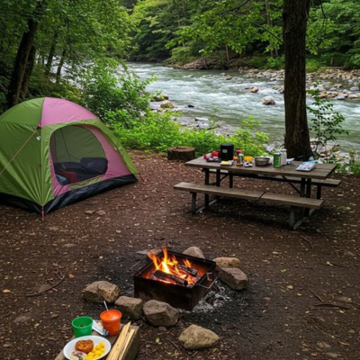
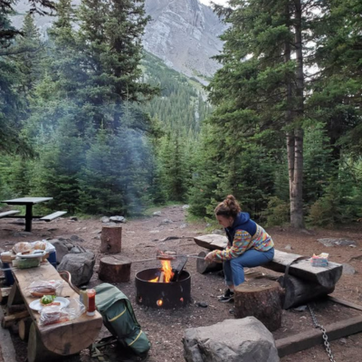
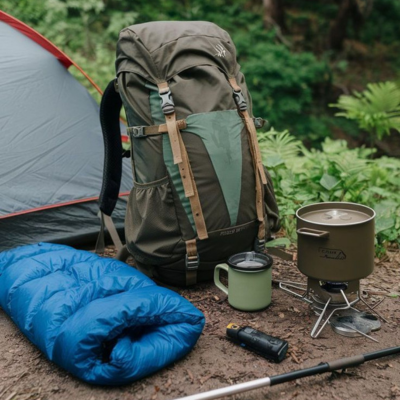
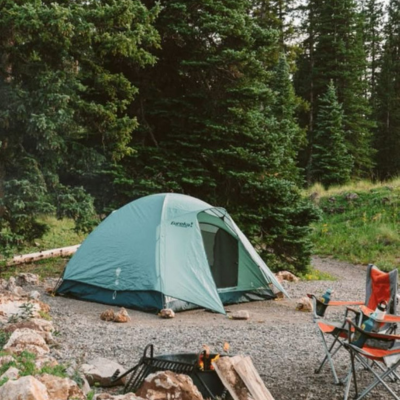
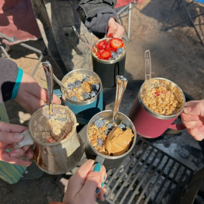
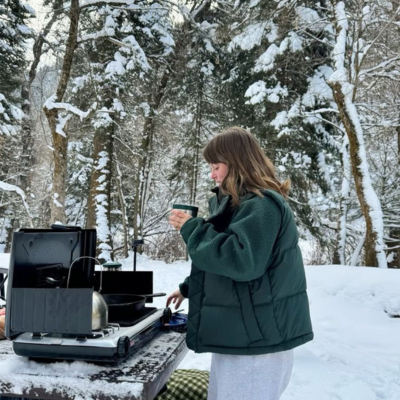
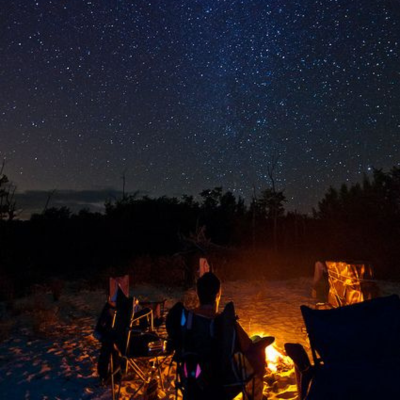

Everything you need to leave the world behind. A field guide for first-time campers and anyone ready to find stillness under open sky.

Why Camp?
There's something almost radical about choosing to sleep outside. In a world of constant notifications and artificial light, camping is one of the few remaining ways to press pause. Studies consistently show that time in nature reduces cortisol levels, lowers blood pressure, and improves sleep quality — even a single night under the stars can reset your nervous system.
Camping isn't just about escaping — it's about arriving. When you strip away the noise, you notice things: the way pine trees smell after rain, how darkness actually has texture, the satisfaction of a meal cooked over a flame you built yourself. These small moments of presence are increasingly rare and increasingly valuable.

Choose Your Site
Not all campgrounds are created equal, and your first trip will go much smoother if you choose a site that matches your experience level. National parks are beautiful but often crowded and require booking months in advance. State parks tend to be less busy and more affordable. KOA campgrounds offer amenities like showers and hookups — a great bridge for true beginners.
Recreation.gov is your best friend for public land camping in the US. Filter by amenities, distance from trailheads, and reservation windows. Read reviews carefully — recent ones will flag seasonal closures, road conditions, and whether the site description matches reality.

Gear List
Gear anxiety is real — outdoor retailers will happily sell you $3,000 worth of equipment for a weekend trip. The truth is that for your first few campouts, you need surprisingly little. A decent tent, a sleeping bag rated for the season, and a pad to sleep on will get you through most situations.
The layering system is where most beginners get tripped up. Cotton is comfortable but deadly when wet — it loses all insulating properties and dries slowly. Instead, build your clothing system in three layers: a moisture-wicking base, an insulating mid-layer, and a wind/waterproof shell. This combination handles nearly every condition you'll encounter.

Setting Up Camp
Arrive with enough daylight to set up. Nothing will test your patience like pitching a tent for the first time by headlamp. Practice at home once before your trip — you'll feel the difference. When choosing your tent spot, look for flat, clear ground. Avoid low spots where water collects and stay away from dead trees and branches overhead.
Building a fire is more skill than luck. Start with a solid foundation: tinder (dry leaves, pine needles, paper), then kindling (small sticks), then fuel wood. Never pour accelerants. Keep your fire contained to the designated ring and never leave it unattended. The campfire rule: if it's too hot to hold your hand above, it's too hot to leave.

Food & Cooking
Camp food has gotten a bad reputation from years of bland freeze-dried meals and sad granola bars. But with a little planning, you can eat remarkably well outdoors. For beginner trips of 1–3 nights, there's no need for dehydrated food at all. Focus on simple, high-calorie meals that travel well and cook fast.
Meal planning is the difference between a delightful camp kitchen and a chaotic scramble. Plan every meal before you leave, including snacks. Pre-chop vegetables and marinate proteins at home — they'll keep fine in a cooler for two days. Your first morning coffee over a camp stove with mist on the lake is one of life's genuinely perfect experiences.

Safety & Weather
Most camping emergencies are preventable. The biggest risks beginners face aren't dramatic — they're mundane: getting cold and wet, drinking untreated water, or wandering off trail without a map. Build conservative habits from the start and you'll avoid 95% of backcountry problems before they begin.
Weather changes fast in the mountains. Check forecasts for your specific campground elevation — conditions at 6,000 feet can be dramatically different from the nearest town. Pack for temperatures 20°F colder than the forecast low and always carry a rain layer even when skies are clear. Afternoon thunderstorms are common in the Cascades, Rockies, and Sierra Nevada from June through August.

Night Sky
The campfire and the night sky are why people keep coming back. After dinner, when the dishes are cleaned and the camp is quiet, you'll sit around the fire and talk differently than you do anywhere else. Something about the open air, the darkness pressing in, and the warmth of flame loosens conversation. Stories emerge that might never surface at a dinner table or on a couch.
For stargazing, let your eyes adjust for at least 20 minutes before looking for faint objects — your eyes are still calibrating. Find the Milky Way by locating the brightest part of the sky away from any light pollution. The free app Stellarium lets you point your phone at the sky to identify constellations, but try to use it sparingly — half the magic is the mystery.
